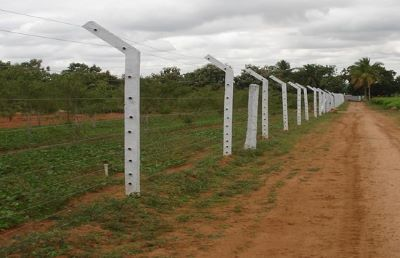

WEEKLY REPORT
WEEK- 6 (From 17-06-24 to 22-06-24)
Objective of the Activity Done: Utilization Of Electricity by Farmers and Related Issues
Detailed Report:
Day 1:
- >After surveying all about sources of electricity used by farmers, this day we surveyed about how electricity is essential to farmers, and who started this scheme, etc.
- >We understood that electricity plays a key role and widely used.
- >Mostly water motors are used more under electricity usage.
Day 2:
- >During our survey we wanted to know how, when and by whom this scheme was started
- >We came to know that, in India Prime minister Narendra Modi started giving free electricity to farmers on February 15, 2024.
- >In AP, Dr. Y. S. Rajashekhar Reddy started giving free electricity to farmers.
Day 3:
- >Regarding the usage of electricity we compared the use of electricity in drip and sprinkle irrigations..
- >Both are used based on the fertility of land, crops, and water availability.
- >While during electricity drip consumes less electricity compared to sprinkle irrigation.
Day 4:
- >We gathered overall usage of electricity in India through online.
- >An Indian village has a total electricity demand of approximately 1,826 kWh per day.
- >In Andhra Pradesh they consume averagely 17,905 MW.
Day 5:
- >We researched on how much electricity bill farmers get per day for irrigation.
- >On an average a farmer gets 210 rupees as an electricity bill per day.
Day 6:
- As a part of final day of the week:
- >We ourselves questioned, what if there will be no electricity for farming.
- >Electricity in farming developed the amount of crops, save time and make connectivity outside world.
- >At final we completed this week report and submitted it to our respected guide.
